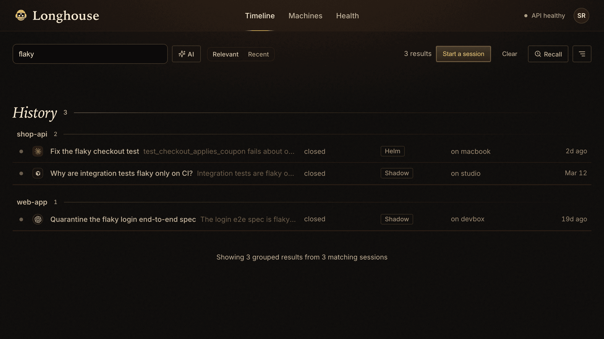
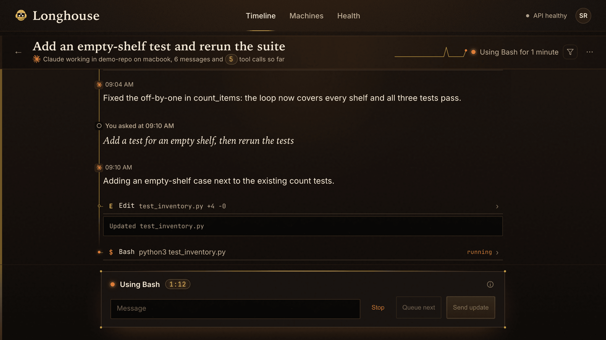

1
The session is the durable object
A session is not a dead transcript. It is something you can inspect, address, tail, and continue.
Longhouse turns Claude Code, Codex, and Gemini sessions into durable objects you can search, inspect, message, and resume. Start free locally. Upgrade to hosted when you want always-on access.
Open the product in under 2 minutes
curl -fsSL https://get.longhouse.ai/install.sh | bash longhouse serve --demo
longhouse wall --json
The bundled UI is the easiest way to look around. The same kernel is scriptable from the terminal and
from /api/agents/*.
Kernel Thesis
Longhouse should feel like the missing operating system for CLI agent work: the session becomes a durable object, the machine surface is real, and the bundled UI sits on top instead of being the only way in.
A session is not a dead transcript. It is something you can inspect, address, tail, and continue.
Longhouse stores, indexes, and serves raw session signal fast. The intelligence stays with the models at the edge.
The first proof of value is free and local. Hosted is what you buy when you want always-on sessions and access from anywhere.
Proof Of Value
The strongest story is not “look at this website.” It is “I found prior work, recovered context, coordinated through the kernel, and kept going.”
Use demo data or real shipped sessions. No billing friction before the first win.
Find the session where auth, retries, or a refactor was solved instead of grepping provider logs by hand.
Open the exact transcript and tool history. The model already did the work; Longhouse makes it reusable.
Show wall, tail, or a directed session message. The coordination surface matters as much as the search surface.
Close the loop by resuming work from the recovered context. Optional final beat: show it reachable from another device.
Canonical demo line:
Find the session. Ask it. Continue it.
That line is short enough for the hero, concrete enough for the product, and specific enough to differentiate from generic “AI workspace” tools.
Kernel Surface
The page should prove that Longhouse is operable from terminal and HTTP before it leans on the browser story.
See active and recent sessions around a repo or project.
longhouse wall --json
Tail the latest events or fetch the full machine-facing session detail.
longhouse tail SESSION_ID longhouse sessions get SESSION_ID --json
Message another session, then read and acknowledge inbox state.
longhouse message TARGET_ID "Inspect the failing test" longhouse check-messages --json
Resume from terminal or call the machine surface directly.
curl -N \ -H "X-Agents-Token: $LONGHOUSE_TOKEN" \ "$LONGHOUSE_URL/api/agents/sessions/$SESSION_ID/continue"
Integrated Human View
Keep the timeline, search, and detail views, but use them as proof that the kernel has a great bundled human interface.



Provider Truth
Claude is strongest today. Archive support is broader than continuation parity. That honesty builds trust.
Best current path for direct browser continuation, hooks, and telemetry.
Important part of the unified archive and cloud-start path now, with continuation parity still behind Claude.
Useful as part of the shared timeline and cloud-start surface, with direct continuation still behind Claude.
Hosted Beta
Hosted should read like the upgrade for people who already believe: browser access from anywhere, managed cloud sessions, and a hot instance that keeps working after the laptop closes.
Local install, demo flow, SQLite-backed archive, multi-provider session ingest, search, and the machine surface.
Always-on sessions, browser access from any device, managed cloud sessions, your own subdomain, and less operator work.
File: web/public/landing-session-kernel-v2.html